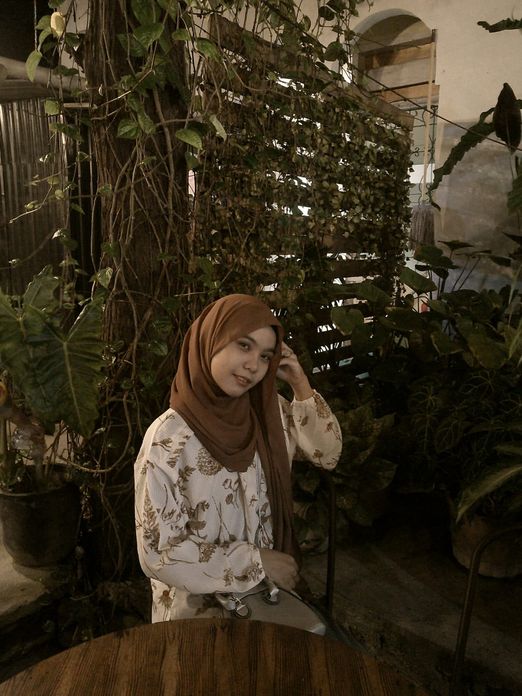
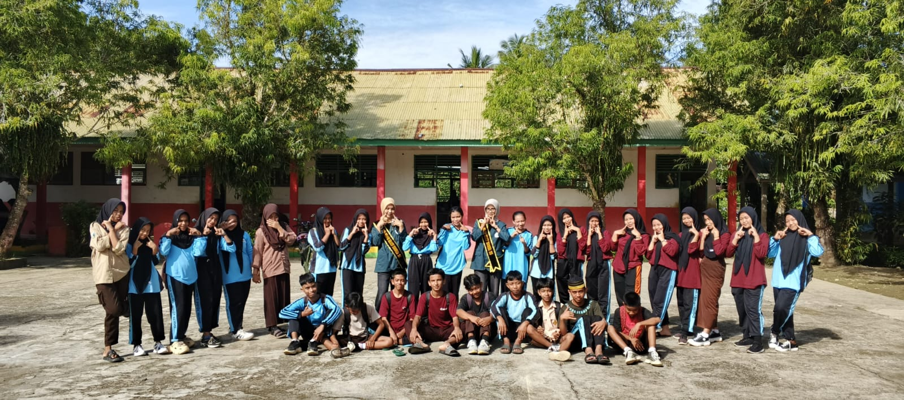
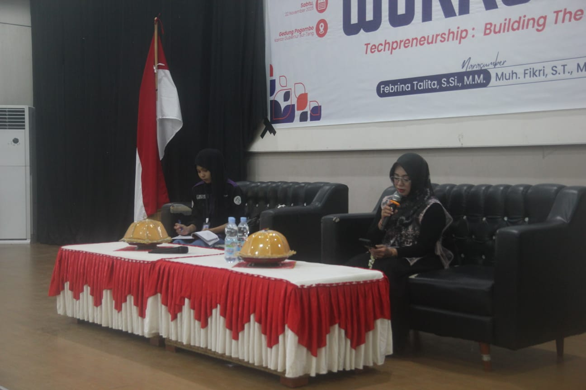
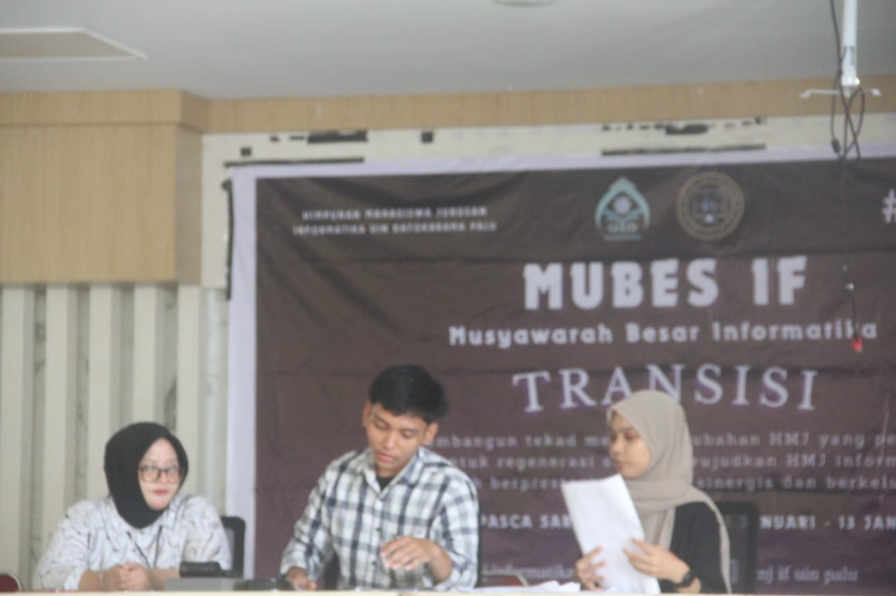
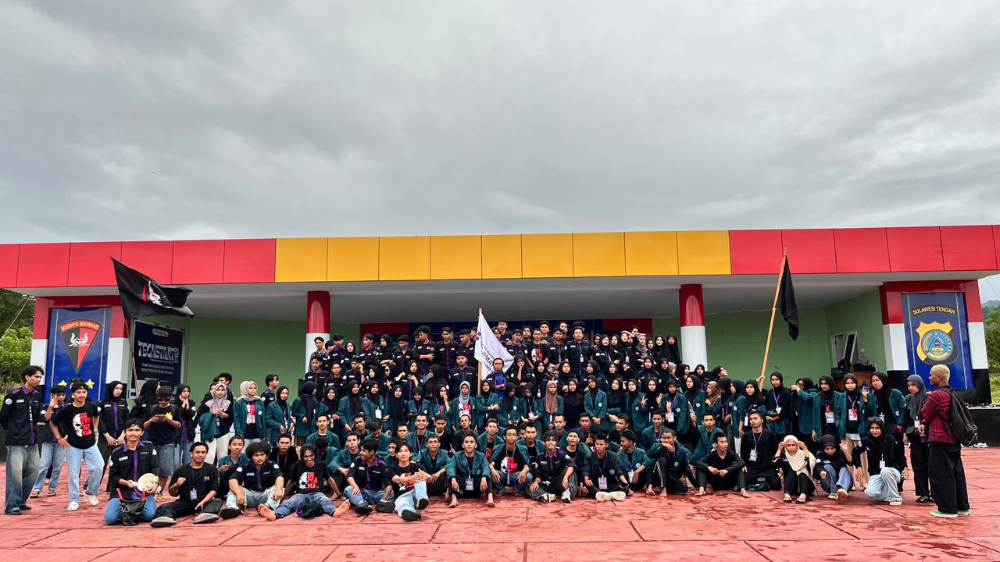

Berpartisipasi dalam kegiatan sosialisasi di sekolah dengan membantu penyampaian informasi kepada siswa, berinteraksi langsung dengan peserta, serta mengembangkan kemampuan komunikasi, public speaking, dan kerja sama tim. kegiatan ini juga melatih rasa tanggung jawab, kepercayaan diri, dan kemampuan beradaptasi dalam lingkungan baru.
Read Moremenjadi moderator dalam kegiatan workshop edukasi dengan memandu jalannya acara, membangun interaksi bersama peserta, serta menjaga suasana kegiatan tetap aktif dan interaktif selama acara berlangsung. turut membantu mengatur sesi diskusi, penyampaian materi, dan komunikasi antara pemateri dengan peserta agar kegiatan berjalan dengan baik dan nyaman diikuti.
Read More

Berpartisipasi sebagai anggota presidium dalam kegiatan musyawarah besar(MUBES) dengan membantu mengatur jalannya sidang, menjaga suasana diskusi tetap kondusif, serta mendukung koordinasi antara peserta dan pimpinan sidang selama kegiatan berlangsung. turut membantu proses penyampaian pendapat, pengambilan keputusan, dan memastikan acara berjalan tertib serta sesuai dengan susunan kegiatan yang telah ditentukan. Read More
menjadi koordinator acara dalam kegiatan techstart dengan membantu mengatur jalannya acara, mengoordinasikan panitia, serta memastikan setiap rangkaian kegiatan berjalan dengan baik dan sesuai rencana. turut membangun komunikasi antar anggota tim dan menjaga suasana acara tetap teratur selama kegiatan berlangsung
Read More